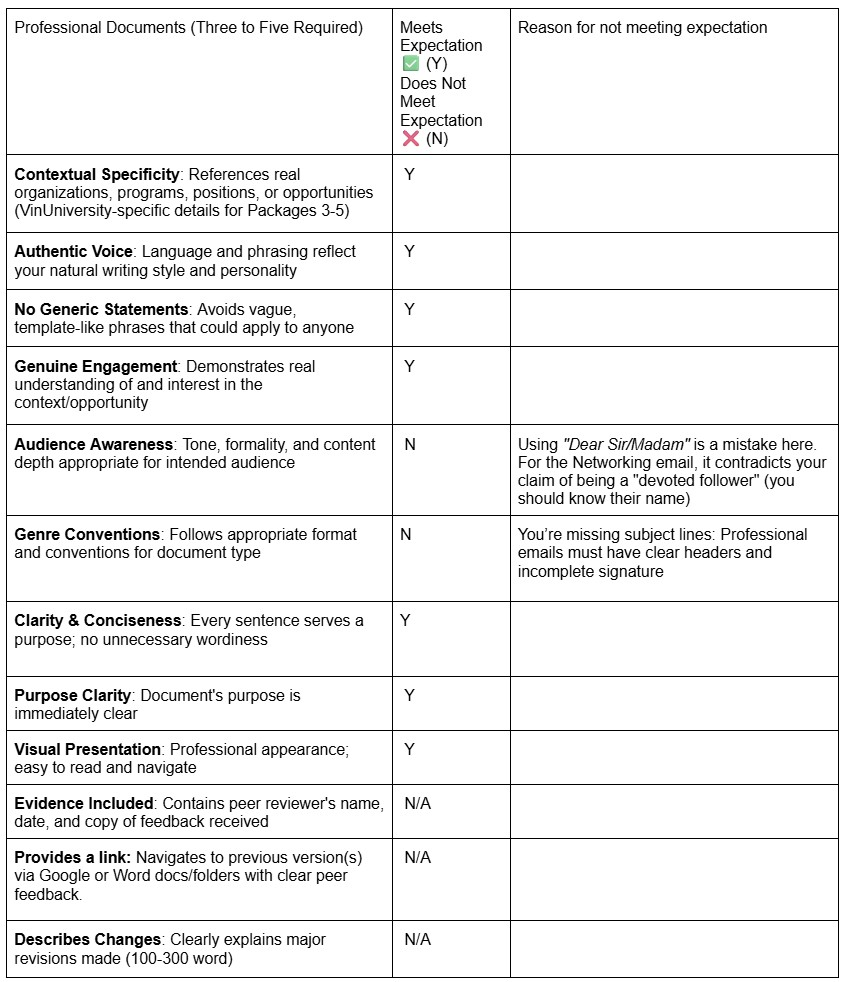

1. Networking Email
Dear Sir/Madam,
My name is Nhi, a Multimedia Communication student at VinUniversity and a content creator on TikTok with 17,000 followers. I have been a devoted follower of your channel on Schannel for a long time. I am particularly impressed by your scriptwriting logic and professional editing style. More importantly, your engaging vocal delivery and ability to hook the audience in the first few seconds have greatly influenced my own approach to video production.
I am writing to you because I admire your career path and would love to learn from your experience. As I prepare to step into the professional media industry, I would deeply value the opportunity to have a brief 15-minute coffee chat (or online call) with you. I would love to hear your insights on building a sustainable career as a professional creator and how to maintain creativity under pressure.
I know you are very busy, so I would be incredibly grateful for any time you could spare. Thank you for being such an inspiration to young creators like me.
Sincerely,
Tue Nhi
2. Inquiry Email
Dear Sir/Madam,
I am writing to express my strong interest in the Social Media Management position at NeuroLegacy. After reviewing the job description, I am excited about the opportunity to contribute to your mission of expanding the brand globally, especially towards the UK market.
To ensure my application and portfolio are best tailored to the specific needs of the team, I would appreciate it if you could clarify a few aspects of the role:
1. Workload Balance: Could you share the expected balance between technical production (filming/editing) and strategic planning (content ideation/scripting) for this role?
2. Platform Focus: While the goal is global reach, could you clarify how many platforms the team is currently managing, and which platform is prioritized as the primary growth channel?
Understanding these details would greatly help me align my skills and proposal with NeuroLegacy’s current direction.
Thank you very much for your time and assistance.
Warm regards,
Tue Nhi
3. Follow-up Email
Dear Sir/Madam,
I am writing to formally accept your offer for the Content Creator position at Onsra. I am truly honored and excited about the opportunity to contribute to Onsra’s unique storytelling and help grow the brand’s digital presence.
To help me prepare for a smooth transition, could you please provide some details regarding the onboarding process? Specifically, I would like to confirm my official start date and whether there are any specific documents or materials I should prepare in advance of my first day.
Thank you once again for this opportunity. I look forward to joining the team and starting our journey together.
I am eager to bring my technical expertise and global mindset to the NeuroLegacy team. Thank you for your time and consideration. I look forward to discussing how my skills can contribute to expanding the company’s digital footprint.
Warm regards,
Tue Nhi
Peer Feedback Documentation
Reviewer: Lương Hoàng Thảo
Date: 26/12/2025

General Feedback:
Your email drafts demonstrate strong strategic thinking, particularly in the Inquiry email where you ask insightful questions about platform prioritization and workload. However, the overall impact is weakened by significant formatting oversights, such as missing subject lines and incomplete signature blocks. Additionally, using the generic "Dear Sir/Madam" salutation in your Networking email contradicts your claim of being a "devoted follower." To make these documents effective, you need to fix the formatting and personalize the greeting for the creator you are contacting.
Revision Process
Action Taken:
Reflecting on the peer feedback, I realized that formatting errors like missing Subject Lines and Signatures could make my emails look unprofessional or be mistaken for spam. To fix this, I will add clear, specific headers to every draft and include a full contact signature block with my LinkedIn and phone number. I will also correct the salutation in my Networking email; instead of using a generic "Dear Sir/Madam," I will address the creator by name to prove that I am a genuine follower and truly value their specific work.